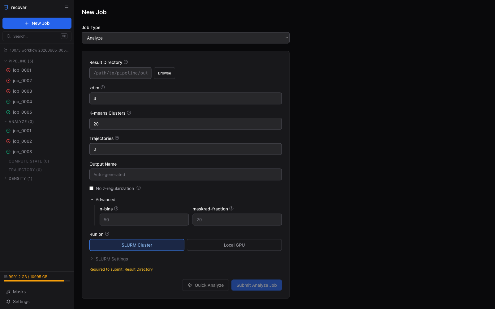

Analyzing Results¶
After the pipeline finishes, use recovar analyze to generate volumes, compute k-means clusters, create trajectories, and run UMAP.
Choose your workflow: CLI or GUI
This page has tabbed instructions for both the command line and the web GUI. Click the tab headers below each section to switch. Your choice is remembered across all pages. How to launch the GUI →
Submitting an analyze job¶

- From a completed pipeline job, click Analyze this pipeline output in Suggested Next Steps (auto-fills the result directory)
- Or click + New Job > Analyze and browse to the pipeline output directory
- Set zdim, k-means clusters, and trajectories
- Click Submit Analyze Job
This generates:
- K-means cluster centers and their volumes
- UMAP embedding of the latent space
- Trajectories between cluster pairs (if requested)
Results are saved to output/analysis_10/.
Options¶
| Flag | Default | Description |
|---|---|---|
--zdim |
Required | Latent dimension (single integer) |
-o |
Auto | Output directory (default: result_dir/output/analysis_{zdim}/) |
--n-clusters |
20 | Number of k-means clusters |
--n-trajectories |
0 | Number of trajectories between cluster pairs |
--n-vols-along-path |
6 | Volumes per trajectory |
--Bfactor |
0 | B-factor sharpening |
--n-bins |
50 | Bins for kernel regression |
--skip-umap |
False | Skip UMAP (faster for large datasets) |
--skip-centers |
False | Skip generating cluster center volumes |
--lazy |
False | Lazy loading for large datasets |
--no-z-regularization |
False | Use unregularized latent variables |
How to choose zdim
Look at the eigenvalue spectrum plot. Choose the zdim where eigenvalues start to flatten -- this is where signal transitions to noise. Typical values: 2-4 for simple motions, 10-20 for complex heterogeneity.
Sampling many states
To sample many conformational states (e.g., 100-200), use --n-clusters=200 and --n-bins=10 for speed, then recompute selected states at higher resolution with compute_state.
Generating volumes at specific points¶
Use compute_state to generate volumes at specific coordinates in latent space:
The coordinates file is a text file with shape (n_points, zdim), readable by np.loadtxt. You can use the k-means centers from analyze:
recovar compute_state output -o volumes \
--latent-points output/analysis_10/kmeans/centers.txt --Bfactor=50
Options¶
| Flag | Default | Description |
|---|---|---|
--latent-points |
Required | Coordinates file (.txt) |
--Bfactor |
0 | B-factor sharpening |
--n-bins |
50 | Bins for kernel regression |
--maskrad-fraction |
20 | Kernel radius = grid_size / maskrad_fraction |
--n-min-particles |
100 | Minimum particles for kernel regression |
--particles |
Same | Different particle stack for higher resolution |
--datadir |
Same | Path prefix for particle paths |
Computing trajectories¶
Use compute_trajectory to compute high-density (low free-energy) paths through latent space:
recovar compute_trajectory output -o trajectory --zdim=10 \
--density density/data/deconv_density_knee.pkl \
--endpts centers.txt --ind 0,1
Specifying endpoints¶
Choose one of:
| Method | Flags | Description |
|---|---|---|
| From coordinate file | --endpts file.txt --ind 0,1 |
Lines 0 and 1 of the file |
| Separate files | --z_st start.txt --z_end end.txt |
One coordinate per file |
| From coordinate file | --endpts file.txt |
Uses first two lines |
Options¶
| Flag | Default | Description |
|---|---|---|
--zdim |
Required | Latent dimension |
--density |
None | Density file for high-density path |
--n-vols-along-path |
6 | Number of volumes along the path |
--Bfactor |
0 | B-factor sharpening |
--n-bins |
50 | Bins for kernel regression |
Tip
The --density option is important for computing paths that follow high-density (low free-energy) regions. Generate density with estimate_conformational_density.
Viewing results¶
Interactive exploration
Use recovar gui to explore results interactively in your browser — view scatter plots, click to generate volumes, and inspect 3D renderings. See the GUI Guide.
Volume files¶
Open .mrc files in ChimeraX, Chimera, or any MRC viewer:
output/analysis_10/
kmeans/
center000.mrc # K-means center 0
center001.mrc # K-means center 1
center000_half1_unfil.mrc # Half-map 1 (for FSC)
...
centers.txt # Center coordinates
diagnostics/center000/ # Per-volume diagnostics
traj000/
state000.mrc # Start of trajectory
state001.mrc # Along trajectory
...
diagnostics/state000/ # Per-volume diagnostics
UMAP plots¶
UMAP embeddings are saved in the analysis directory. Use the Jupyter notebook kernel (recovar) for interactive visualization.
Trajectory movies¶
Load the trajectory volumes as a series in ChimeraX to create conformational movies:
Example output¶
See the Tutorial for a complete worked example with all output plots from recovar analyze on EMPIAR-10076.